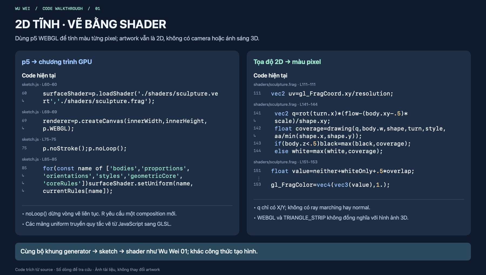
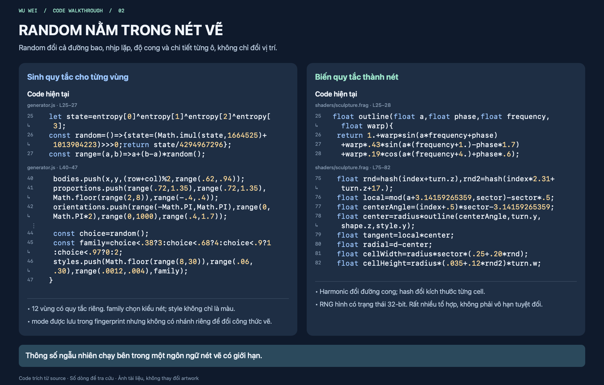
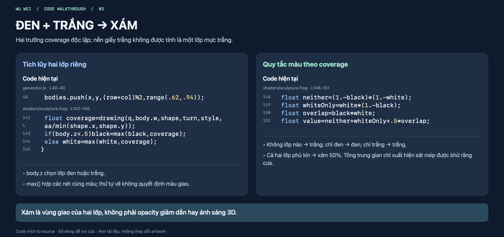
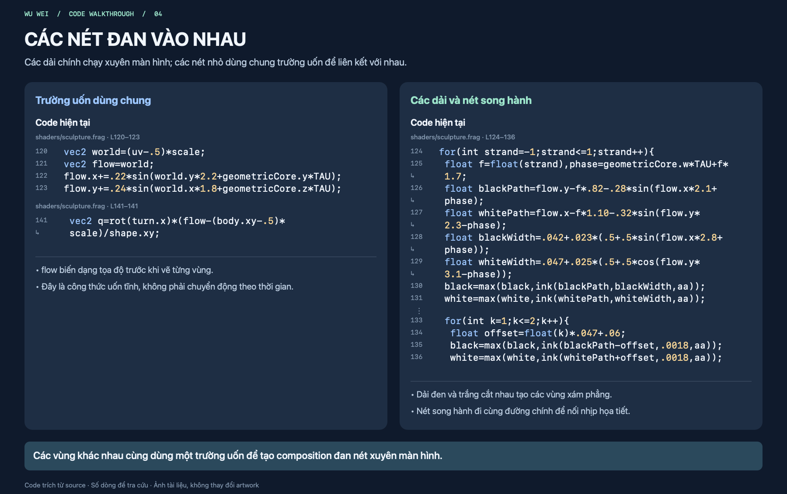
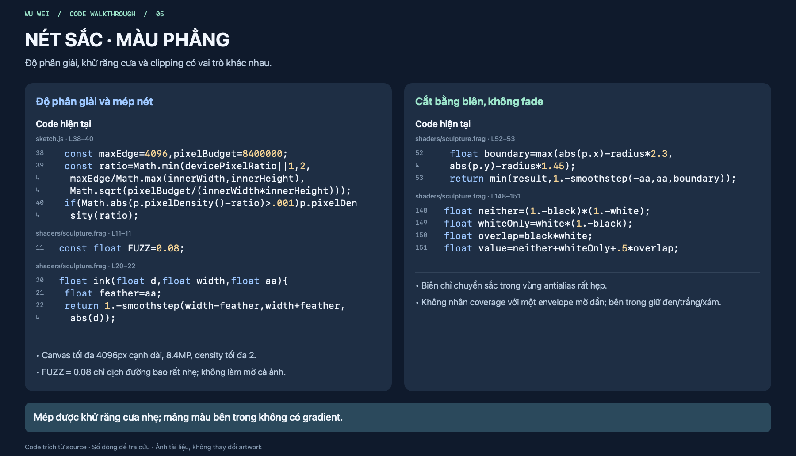
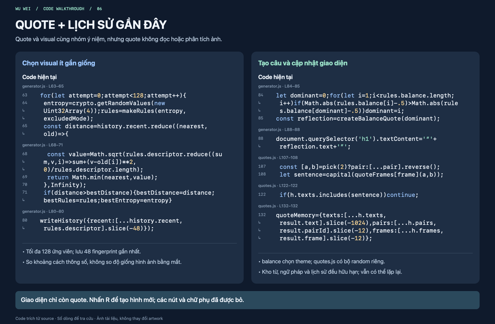

6 ảnh giải thích và 10 ảnh code thuần từ source hiện tại. Cùng cách trình bày với Wu Wei gốc.
Artwork · Giải thích dạng chữDùng p5 WEBGL để tính màu từng pixel; artwork vẫn là 2D, không có camera hoặc ánh sáng 3D.

Random đổi cả đường bao, nhịp lặp, độ cong và chi tiết từng ô, không chỉ đổi vị trí.

Hai trường coverage độc lập; nền giấy trắng không được tính là một lớp mực trắng.

Các dải chính chạy xuyên màn hình; các nét nhỏ dùng chung trường uốn để liên kết với nhau.

Độ phân giải, khử răng cưa và clipping có vai trò khác nhau.

Quote và visual cùng nhóm ý niệm, nhưng quote không đọc hoặc phân tích ảnh.
